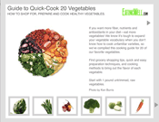
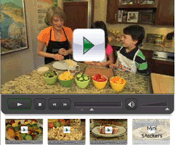
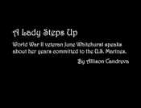
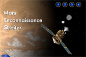
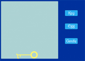
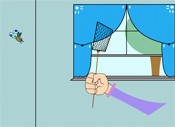

This is a slideshow I built while interning at Eating Well in Vermont. The images were provided.
Every year, Eating Well has a holiday cookie contest. I was a part of the testing over the summer and took a video of the progress.

While in Vermont, I also worked on a Flash package of buttons for this video. The video was provided.

Our last flash assignment was a photo story. I chose to do my on a subject I was interviewing for Senior Times. Her name is June Whitehurst, and she is a World War II veteran.

Our fourth assignment was to create a how-to presentation. I enjoy cooking and chose to create a quick, easy meal, complete with two sides.

My third project focused on the Mars Reconnaissance Orbiter, which launched in 2005 on a search for evidence that water persisted on the surface of Mars.

My second flash is a series of three animations to demonstrate the capability of different buttons and motion.

My first flash is a simple animation with graphics that I created in flash. The fly comes in the window and a hand appears to swat it.